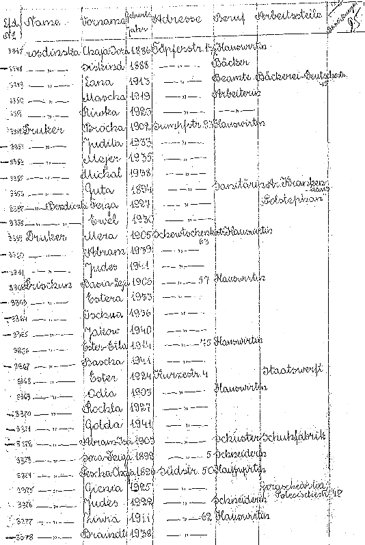
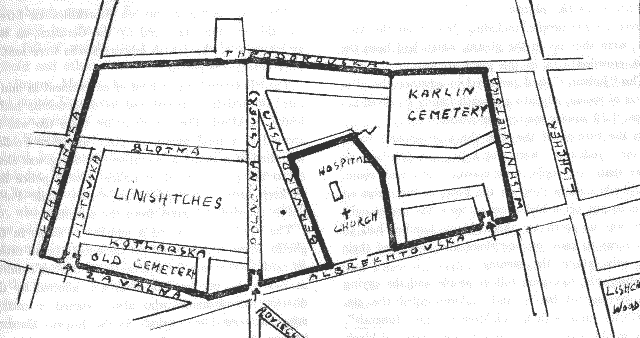

This database contains information on more than 18,000 Jews in the Pinsk ghetto in late 1941 or 1942.
According to the Encyclopedia of the Holocaust, there were about 30,000 Jews in Pinsk in early 1941. After the German occupation, in 1942 a ghetto was established. Virtually all residents of the ghetto were murdered in the final aktion of Oct 28 - Nov 1, 1942. (see Encyclopedia Judaica Vol. 13, p. 543).
Prior to WWI, Pinsk was in Minsk gubernia (Minsk province) of the Russian Empire. Between the wars, Pinsk was in Poleskie województwa (Polesie province) of Poland. After WWII, Pinsk was in the U.S.S.R. Today, Pinsk is in Belarus.
For more information about the Pinsk Ghetto list, see the article "Pinsk Jews in the Ghetto: Current state of affairs" by Nachum Boneh, from Yalkut Moreshet, Number 64, November 1997.
A web site dedicated to the memory of the Jews of the Pinsk Ghetto who were murdered between 29 to 31 October 1942 is available in English and Hebrew at www.pinskjews.org.il.
This collection consists of information on over 18,000 Jews residents in the ghetto in late 1941 or 1942. The list was prepared by the Germans as a list of Pinsk Ghetto occupants sometime in 1942. This material was microfilmed at the Brest Oblast Archives in Belarus. The microfilms are held at the United States Holocaust Memorial Museum (1996 A169, Reel 28), which had been received from the Yad Vashem Archives.

The material was computerized by volunteers of the JewishGen Belarus SIG. This material was then proofread by volunteers at the United States Holocaust Memorial Museum in Washington, D.C.
The original list, in German, is alphabetical by family name, and consists of the following fields:
No further information is available in the original material and it does not give any information relating to the ultimate fate of these persons.
 |
| Map of the Pinsk Ghetto |
The following persons were involved in doing the data entry and checking of the database:
Adam Davis, Alvin Holtzman, Betty Bloomstone, Charles Hollander, Cheryl Etting, Dan Solomon, Darren Klorfine, David Leidner, David Seth Rachleff, Debra Wolraich, Diane Jacobs, Edward Rosenbaum, Francine M. Schwartz, Gerard Neiditsch, Harry Zolkower, Henry Gitelman, Jeffrey A. Levy, Jill Davidson, Joe Garf, Jon Eidelson, Jonathan Ogur, Josh Kopelman, Kimberly Schaffel, Laurie Tessier, Les & Arlyn Kerr, Linda Birnbaum, Maer Davis, Martin Cotler, Marvin Lederman, Moti Gavish, Ray Stone, Robert Bernstein, Ronit Zadikov, Sara Goldman, Selma and Dave Schwartz, Stanley N. Golembe, Susan Mann, Ted Gostin, Terri Mathisen.
The inclusion of this database in the JewishGen Belarus Database would not have been possible without the efforts of Michael Tobias and Warren Blatt. The JewishGen Belarus SIG greatly appreciates their time and technical expertise which made this database possible. The JewishGen Belarus SIG greatly appreciates the cooperation of the USHMM and specifically Michael Goldman and Peter Lande for the joint effort to make this database a reality. Last but certainly not least, we would like to thank Thia Persoff for translating Mr. Boneh's article, Mr. Boneh for allowing us to use his article, and Ronit Zadikov who provided much assistance in coordinating communications between Mr. Boneh and the JewishGen Belarus SIG.
Linda S. Birnbaum
June, 2000
The Pinsk Ghetto Database is searchable via either the JewishGen Belarus Database or the JewishGen Holocaust Database.
| JewishGen Belarus Database | JewishGen Holocaust Database |